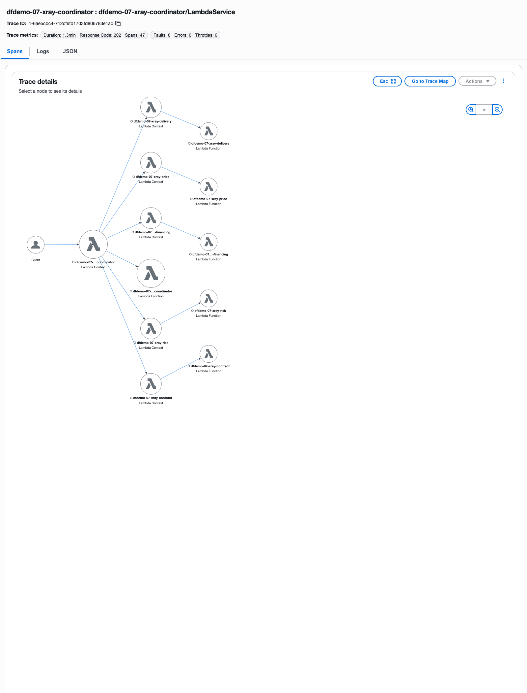
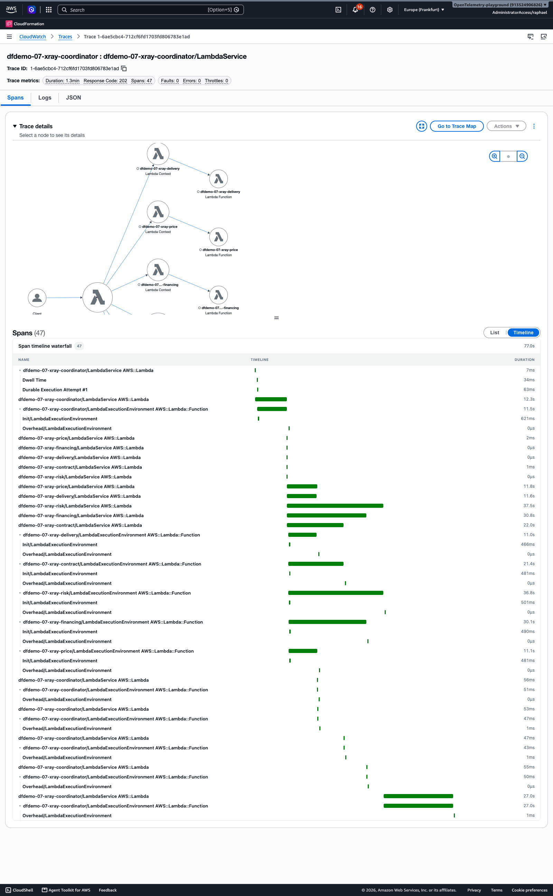
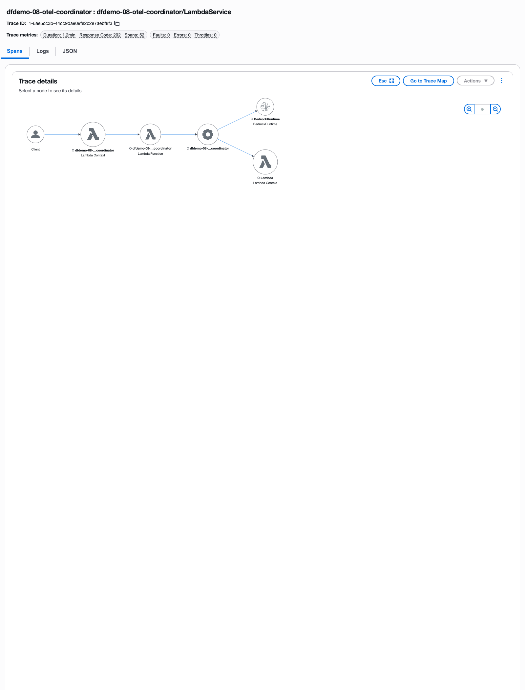
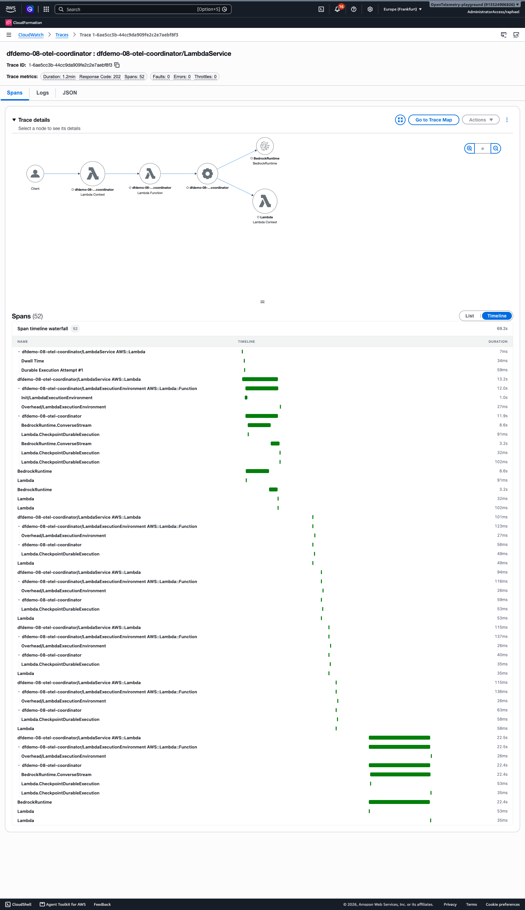
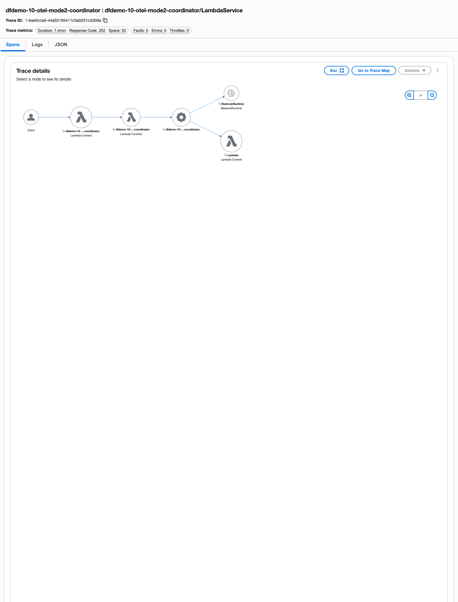
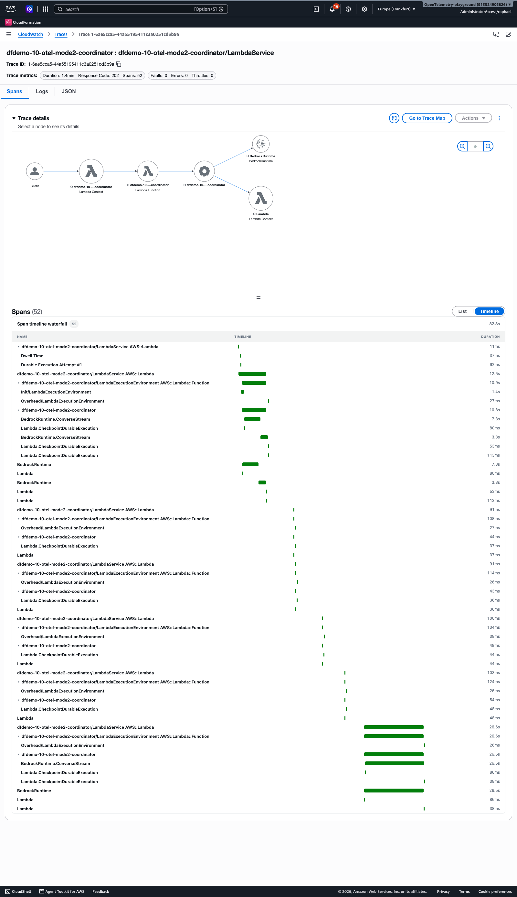
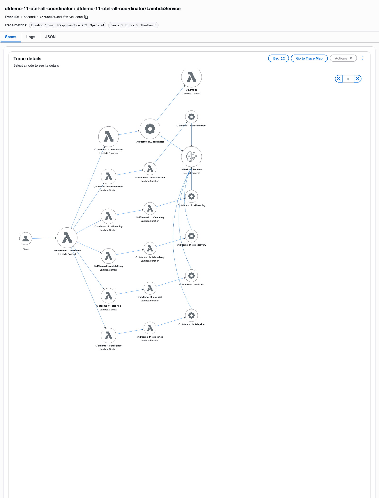
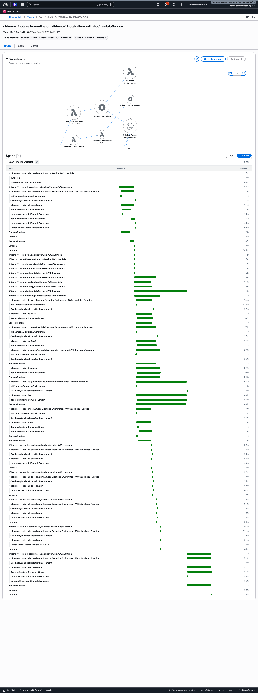

AWS Lambda Durable Functions: an orchestrator across LLM calls
Step-by-step presentation guide. Every request, response, ID and screenshot comes from a real run in stack dfdemo, region eu-central-1.
Source: src/steps/NN-*/artifacts/, screenshots in report/img/. Each step ends with a prompt that reproduces its code.
What are durable functions?
The first durable function: retry, checkpoint, replay
Prompt for this step
Part of one continuous coding session: each prompt builds on what the earlier steps already created. Written the way you would say it to a coding agent, which fills in the details, so the code in this repository is one possible result.
I am preparing a talk on AWS Lambda durable functions and I want to build it up step by step in this repo, one folder per step under src/steps. The purchasing agent that is already here will end up as step 5, so move its handlers into src/steps/05-split for now. Step 1 is a really small durable function in TypeScript to explain checkpoint and replay: two steps, the first just builds a greeting, the second fails on its first attempt and works on the retry (up to three attempts with a short backoff). Log with plain console.log at the top of the handler and inside each step, so I can see in CloudWatch which code ran again after a replay. Add it to the SAM template with durable execution switched on and give me a request.json to invoke it with.
The deployed function fails when it loads: "Identifier createRequire has already been declared". Please fix the build.
Outline bullet
Show simple code handler. Two steps: the second fails, gets retried, and succeeds. Explain checkpointing and replay.
Goal
Show that a normal Lambda handler wrapped in withDurableExecution survives a failing step. Step "prepare" is checkpointed; step "flaky" fails on attempt 1, is retried after a delay, and succeeds on attempt 2 without re-running "prepare".
What to say
- This is a plain Lambda handler. The only change is the withDurableExecution wrapper and context.step around the work.
- Each step is checkpointed when it succeeds. Step "prepare" runs once; its result is stored.
- Step "flaky" throws on attempt 1. The SDK records StepFailed, ends the invocation and starts a new one after the retry delay (1 s here).
- The new invocation replays the handler from the top. "prepare" returns its stored result without running its body; only "flaky" runs again, now with attempt 2.
- Look at the logs: prepare_body_executed appears once, flaky_body_executed twice, handler_invoked twice.
Code excerpt (final code)
export const handler = withDurableExecution(async (
event: RetryEvent,
context: DurableContext
): Promise<Record<string, unknown>> => {
console.log(JSON.stringify({ event: 'handler_invoked', requestId: context.lambdaContext.awsRequestId }))
const greeting = await context.step('prepare', async () => {
console.log(JSON.stringify({ event: 'prepare_body_executed' }))
return `Hello, ${event.name ?? 'durable world'}`
})
const result = await context.step('flaky', async (stepCtx) => {
console.log(JSON.stringify({ event: 'flaky_body_executed', attempt: stepCtx.attempt }))
if (stepCtx.attempt < 2) {
throw new Error('Simulated transient failure on attempt 1')
}
return { greeting, succeededOnAttempt: stepCtx.attempt }
}, {
retryStrategy: createRetryStrategy({
maxAttempts: 3,
initialDelay: { seconds: 1 },
maxDelay: { seconds: 5 },
backoffRate: 2.0,
}),
})
return { status: 'completed', ...result }Invocation
| Function | dfdemo-01-retry:2 |
|---|---|
| Request ID (x-amzn-RequestId) | 6f068699-2485-4c43-89b2-5abc52d7fcc0 |
| Durable execution ID | 433ebc7b-64ce-3bde-99b5-30221d8270ee |
| Durable execution ARN | arn:aws:lambda:eu-central-1:913524906826:function:dfdemo-01-retry:2/durable-execution/14b62773-262a-4419-b8fc-3e2952252c5c/433ebc7b-64ce-3bde-99b5-30221d8270ee |
| Status | SUCCEEDED |
| Started / ended | 2026-10-31T11:51:32.078000+01:00 / 2026-10-31T11:51:35.307000+01:00 (3.2 s wall clock) |
{
"name": "durable world"
}{
"StatusCode": 202,
"ExecutedVersion": null,
"DurableExecutionArn": "arn:aws:lambda:eu-central-1:913524906826:function:dfdemo-01-retry:2/durable-execution/14b62773-262a-4419-b8fc-3e2952252c5c/433ebc7b-64ce-3bde-99b5-30221d8270ee",
"Headers": {
"x-amzn-RequestId": "6f068699-2485-4c43-89b2-5abc52d7fcc0"
},
"Body": ""
}{
"status": "completed",
"greeting": "Hello, durable world",
"succeededOnAttempt": 2
}History event sequence (history.json): ExecutionStarted → StepStarted(prepare) → StepSucceeded(prepare) → StepStarted(flaky) → StepFailed(flaky) → InvocationCompleted → StepStarted(flaky) → StepSucceeded(flaky) → InvocationCompleted → ExecutionSucceeded. StepFailed(flaky) then a second StepStarted(flaky), but no second StepStarted(prepare).
// 2026-10-31T10:51:32.556Z
{
"timestamp": "2026-10-31T10:51:32.556Z",
"level": "INFO",
"requestId": "994d90ac-b2fe-4425-81fc-7588e9aaaa45",
"message": {
"event": "handler_invoked",
"requestId": "994d90ac-b2fe-4425-81fc-7588e9aaaa45"
}
}
// 2026-10-31T10:51:32.590Z
{
"timestamp": "2026-10-31T10:51:32.590Z",
"level": "INFO",
"requestId": "994d90ac-b2fe-4425-81fc-7588e9aaaa45",
"message": {
"event": "prepare_body_executed"
}
}
// 2026-10-31T10:51:34.177Z
{
"timestamp": "2026-10-31T10:51:34.177Z",
"level": "INFO",
"requestId": "994d90ac-b2fe-4425-81fc-7588e9aaaa45",
"message": {
"event": "flaky_body_executed",
"attempt": 1
}
}
// 2026-10-31T10:51:35.254Z
{
"timestamp": "2026-10-31T10:51:35.254Z",
"level": "INFO",
"requestId": "f06fe744-b33f-4702-97eb-53a67eb0e579",
"message": {
"event": "handler_invoked",
"requestId": "f06fe744-b33f-4702-97eb-53a67eb0e579"
}
}
// 2026-10-31T10:51:35.255Z
{
"timestamp": "2026-10-31T10:51:35.255Z",
"level": "INFO",
"requestId": "f06fe744-b33f-4702-97eb-53a67eb0e579",
"message": {
"event": "flaky_body_executed",
"attempt": 2
}
}Screenshots


Durable execution drill-down (console)


Add a wait operation: you do not pay for waiting
Prompt for this step
Part of one continuous coding session: each prompt builds on what the earlier steps already created. Written the way you would say it to a coding agent, which fills in the details, so the code in this repository is one possible result.
That works. Now extend the same function with a wait: after the flaky step wait a minute, then run a final step that returns done. I want to show in the REPORT line that we are billed for the few milliseconds of real work and not for the 60 seconds of waiting, so let me set the wait length in the request. Same pattern as before: its own folder and its own function in the template.
Outline bullet
Extend the Lambda with a wait operation. Execute it and look at the billed duration. Takeaway: you don't pay for wait time.
Goal
Extend step 01 with context.wait("cooldown", 60 s). Compare the wall-clock duration of the execution (about 61 s) with the sum of billed durations of the handler invocations (179 ms).
What to say
- Same handler as before, plus one line: context.wait with 60 seconds.
- When the wait starts, the invocation ends. Nothing runs and nothing is billed until the timer fires and a new invocation replays the handler.
- Wall clock for the execution: 61.357 s. Billed: three invocations, 71 + 67 + 41 = 179 ms.
- Takeaway: you do not pay for the wait time. This is why durable functions suit waits of minutes, hours or days.
Code excerpt (final code)
// The function is not running while it waits.
await context.wait('cooldown', { seconds: waitSeconds })
const finished = await context.step('finish', async () => {
console.log(JSON.stringify({ event: 'finish_body_executed' }))
return 'done'
})
return { status: 'completed', greeting, flaky, waitSeconds, finished }Invocation
| Function | dfdemo-02-wait:2 |
|---|---|
| Request ID (x-amzn-RequestId) | 71c4aa01-3686-48cf-b0a6-7015cf187bb8 |
| Durable execution ID | 8ee1eb82-7baf-371e-8fcb-6519ae5fc9ef |
| Durable execution ARN | arn:aws:lambda:eu-central-1:913524906826:function:dfdemo-02-wait:2/durable-execution/cebba598-2afa-4225-804a-ed24d64c411e/8ee1eb82-7baf-371e-8fcb-6519ae5fc9ef |
| Status | SUCCEEDED |
| Started / ended | 2026-10-31T11:58:44.934000+01:00 / 2026-10-31T11:59:46.291000+01:00 (61.4 s wall clock) |
{
"name": "durable world",
"waitSeconds": 60
}{
"StatusCode": 202,
"ExecutedVersion": null,
"DurableExecutionArn": "arn:aws:lambda:eu-central-1:913524906826:function:dfdemo-02-wait:2/durable-execution/cebba598-2afa-4225-804a-ed24d64c411e/8ee1eb82-7baf-371e-8fcb-6519ae5fc9ef",
"Headers": {
"x-amzn-RequestId": "71c4aa01-3686-48cf-b0a6-7015cf187bb8"
},
"Body": ""
}{
"status": "completed",
"greeting": "Hello, durable world",
"flaky": {
"succeededOnAttempt": 2
},
"waitSeconds": 60,
"finished": "done"
}REPORT lines (billed duration) versus wall clock
REPORT RequestId: af35107c-e7bf-4dc9-8b8d-c00204868179 Duration: 70.412 ms Billed Duration: 71 ms Memory Size: 256 MB Max Memory Used: 107 MB Status: success
REPORT RequestId: 9bb40dcf-a2e4-4f12-a69e-d38139b170a6 Duration: 66.03 ms Billed Duration: 67 ms Memory Size: 256 MB Max Memory Used: 107 MB Status: success
REPORT RequestId: f359fcbd-b6ce-484b-b318-fc6c3ca948e4 Duration: 40.377 ms Billed Duration: 41 ms Memory Size: 256 MB Max Memory Used: 107 MB Status: successWall-clock time versus billed duration (step 02, execution cebba598-2afa-4225-804a-ed24d64c411e)
- Wall clock: ExecutionStarted 2026-10-31T11:58:44.934+01:00 to ExecutionSucceeded 11:59:46.291+01:00 = 61.357 s (includes the 60 s
cooldownwait). - Billed: three handler invocations, 71 ms + 67 ms + 41 ms = 179 ms (see report.txt).
- Between the second InvocationCompleted (11:58:46.200) and the next invocation (11:59:46.264) no function was running, so the 60 s wait added 0 ms of billed duration.
- Durations come from the platform.report log records (the function uses JSON log format, so there is no plain-text "REPORT RequestId" line; report.txt renders the same fields in REPORT form).
Screenshots


Durable execution drill-down (console)


Invoke a model, fail, retry: the first call is replayed, not re-invoked
Prompt for this step
Part of one continuous coding session: each prompt builds on what the earlier steps already created. Written the way you would say it to a coding agent, which fills in the details, so the code in this repository is one possible result.
Now let us bring a model into it. Same pattern again, new folder: two steps that each ask Claude Haiku on Bedrock a short question, and the second one gets the first answer. When I ask for it in the request, the second step should fail on its first attempt and succeed on the retry. I want to prove that the first model call is replayed from the checkpoint and not made again, so log every real model call together with its Bedrock request ID.
Outline bullet
Invoke a model async, then wait. Tries to set the result. (Reworked per the presenter's decision: step B fails once and is retried; step A's model call is replayed from its checkpoint.)
Goal
Two Bedrock calls in two durable steps. Step A succeeds and is checkpointed. Step B calls Bedrock, then fails on its first attempt (request flag failStepBAttempts: 1) and is retried. The retry shows that A's model call is not made again: it is replayed from the checkpoint.
What to say
- Step A asks the model for a one-sentence answer. The answer is checkpointed.
- Step B asks the model to shorten A's answer, then throws SimulatedStepFailure on attempt 1. The failure is raised after the model returned, so the retry visibly repeats the model call.
- On the retry the handler replays from the top. Step A returns the stored text with no Bedrock call. Only B calls the model again.
- Evidence (a) to (d) below: three Bedrock request IDs, A logged once, B logged twice, same A output.
- Correction to the brief: the handler ran twice, not three times. One failed attempt means two invocations; three would need failStepBAttempts: 2.
Code excerpt (final code)
const a = await context.step('model-a', async () => {
const { text, bedrockRequestId } = await converse(prompt)
console.log(JSON.stringify({ event: 'step_a_bedrock_call', bedrockRequestId }))
return text
})
const b = await context.step('model-b', async (stepCtx) => {
const { text, bedrockRequestId } = await converse(`Shorten this to five words: ${a}`)
console.log(JSON.stringify({ event: 'step_b_bedrock_call', attempt: stepCtx.attempt, bedrockRequestId }))
if (stepCtx.attempt <= failStepBAttempts) {
throw new SimulatedStepFailure(`Simulated failure of step B on attempt ${stepCtx.attempt}`)
}
return text
}, {
retryStrategy: (error, attemptCount) =>
error.name === 'SimulatedStepFailure' && attemptCount <= failStepBAttempts
? { shouldRetry: true, delay: { seconds: 2 } }
: { shouldRetry: false },
})
return { status: 'completed', modelId: MODEL_ID, stepA: a, stepB: b, failStepBAttempts }Invocation
| Function | dfdemo-03-model-replay:2 |
|---|---|
| Request ID (x-amzn-RequestId) | 2090852f-69ce-4103-9c11-c5121b16e8c2 |
| Durable execution ID | fa4cab4c-0aed-3898-bf48-1df156818abc |
| Durable execution ARN | arn:aws:lambda:eu-central-1:913524906826:function:dfdemo-03-model-replay:2/durable-execution/2a254ee5-8352-423d-b2c4-2d6aee575b47/fa4cab4c-0aed-3898-bf48-1df156818abc |
| Status | SUCCEEDED |
| Started / ended | 2026-10-31T12:00:14.344000+01:00 / 2026-10-31T12:00:19.385000+01:00 (5.0 s wall clock) |
{
"prompt": "In one sentence, explain what a checkpoint is in a durable workflow.",
"failStepBAttempts": 1
}{
"StatusCode": 202,
"ExecutedVersion": null,
"DurableExecutionArn": "arn:aws:lambda:eu-central-1:913524906826:function:dfdemo-03-model-replay:2/durable-execution/2a254ee5-8352-423d-b2c4-2d6aee575b47/fa4cab4c-0aed-3898-bf48-1df156818abc",
"Headers": {
"x-amzn-RequestId": "2090852f-69ce-4103-9c11-c5121b16e8c2"
},
"Body": ""
}{
"status": "completed",
"modelId": "global.anthropic.claude-haiku-4-5-20251001-v1:0",
"stepA": "A checkpoint is a saved state of a workflow that allows it to resume from that point if interrupted, rather than restarting from the beginning.",
"stepB": "Checkpoint: resume workflow from interruption.",
"failStepBAttempts": 1
}Evidence (a) to (d)
Execution: id fa4cab4c-0aed-3898-bf48-1df156818abc (durable execution name 2a254ee5-8352-423d-b2c4-2d6aee575b47), status SUCCEEDED. ARN: arn:aws:lambda:eu-central-1:913524906826:function:dfdemo-03-model-replay:2/durable-execution/2a254ee5-8352-423d-b2c4-2d6aee575b47/fa4cab4c-0aed-3898-bf48-1df156818abc Lambda request id (async invoke, x-amzn-RequestId): 2090852f-69ce-4103-9c11-c5121b16e8c2. Request: failStepBAttempts: 1.
SDK note: the attempt number IS exposed (stepCtx.attempt), so no error-type-plus-flag workaround was needed for the attempt counter. The retry strategy still filters on the error name SimulatedStepFailure; the failure is thrown after the Bedrock call returns.
(a) Durable history (history.json)
| EventId | Event | Step | Detail |
|---|---|---|---|
| 2 | StepStarted | model-a | |
| 3 | StepSucceeded | model-a | RetryDetails.CurrentAttempt: 1. The only model-a StepSucceeded; no second StepStarted for model-a. |
| 4 | StepStarted | model-b | |
| 5 | StepFailed | model-b | CurrentAttempt: 1, NextAttemptDelaySeconds: 2 |
| 6 | InvocationCompleted | end of invocation 1 | |
| 7 | StepStarted | model-b | attempt 2 (model-a is not started again) |
| 8 | StepSucceeded | model-b | CurrentAttempt: 2 |
| 9, 10 | InvocationCompleted, ExecutionSucceeded |
(b) Plain console.log in CloudWatch (logs.txt)
- Step A body log
step_a_bedrock_callappears once: line 4, Bedrock x-amzn-requestid900c5254-190f-46d8-a1b9-5167903dde7f. - Step B body log
step_b_bedrock_callappears twice: line 5 (attempt 1,dd047786-60ea-4737-94db-c59510c9639a) and line 9 (attempt 2,54a46a9c-4f6a-46c6-bec9-a98c306d28d6). - The second invocation (lines 7-9) has
handler_invokedand the step B log only; there is nostep_a_bedrock_call, so A was replayed from the checkpoint.
(c) Invocation and Bedrock call counts
- Bedrock calls: 3 (A once, B twice), three distinct request ids above.
- Handler invocations: 2, not 3. logs.txt has two
handler_invoked(lines 3 and 8, Lambda request ids406863ae-aa7f-4d5f-8bb3-abac471dd8d3andc602406a-6cf6-4193-be3e-81912a6f8c8b) and history.json has two InvocationCompleted before ExecutionSucceeded. With one failed attempt of B the handler runs twice; the brief's "3 invocations" would needfailStepBAttempts: 2. The request was left as specified (1).
(d) A's output identical across invocations
- history.json truncates step results (
"Result":{"Truncated":true}), so the text is not in the history. - A's body ran once (b), and its checkpointed text is what invocation 2 used to build B's prompt. The final result in execution.json carries
stepA: "A checkpoint is a saved state of a workflow that allows it to resume from that point if interrupted, rather than restarting from the beginning." - Limit: the handler does not log A's text in each invocation, so identity across invocations is shown by A running once and being returned from the checkpoint, not by comparing two printed strings.
Screenshots


Durable execution drill-down (console)


First agent with the Strands SDK
Prompt for this step
Part of one continuous coding session: each prompt builds on what the earlier steps already created. Written the way you would say it to a coding agent, which fills in the details, so the code in this repository is one possible result.
Next, an actual agent. Another new folder: use the Strands SDK with Claude Haiku and give the agent one tool that calculates the monthly payment of a loan. I will ask it something like what the monthly payment is for a 20,000 loan over 36 months at 5 percent, and I want its answer back. Keep it a durable function like the others.
Outline bullet
Introduce the Strands SDK to build the first agent.
Goal
Run a Strands Agent with one tool (monthly_payment) inside one durable step. The whole agent loop (model calls and tool calls) is checkpointed as a single unit.
What to say
- A Strands agent is a model, a system prompt and tools. Here the tool computes a loan payment.
- The agent runs inside context.step("agent"). Model calls and tool calls happen inside the step; only the final answer is checkpointed.
- If the step fails, the retry strategy (3 attempts, exponential backoff) re-runs the whole loop. If it succeeds, a replay never calls the model again.
- The answer is $66.48 per month, computed by the tool, not guessed by the model.
Code excerpt (final code)
const monthlyPayment = tool({
name: 'monthly_payment',
description: 'Calculate the monthly payment of a loan with a fixed annual interest rate.',
inputSchema: z.object({
principal: z.number().describe('Loan amount'),
annualRatePercent: z.number().describe('Annual interest rate in percent'),
months: z.number().describe('Loan term in months'),
}),
callback: async ({ principal, annualRatePercent, months }) => {
const r = annualRatePercent / 100 / 12
const payment = r === 0 ? principal / months : (principal * r) / (1 - Math.pow(1 + r, -months))
return `Monthly payment: ${payment.toFixed(2)}`
},
})
const bedrockRetry = createRetryStrategy({
maxAttempts: 3,
initialDelay: { seconds: 2 },
maxDelay: { seconds: 30 },
backoffRate: 2.0,
})
export const handler = withDurableExecution(async (
event: AgentEvent,
context: DurableContext
): Promise<Record<string, unknown>> => {
const answer = await context.step('agent', async () => {
const agent = new Agent({
model,
systemPrompt: 'You are a concise purchasing assistant. Use the monthly_payment tool for any loan calculation.',
tools: [monthlyPayment],
printer: false,
})
const result = await agent.invoke(event.request)
return result.toString()
}, { retryStrategy: bedrockRetry })
return { status: 'completed', answer }Invocation
| Function | dfdemo-04-agent:2 |
|---|---|
| Request ID (x-amzn-RequestId) | 5c75720f-65e8-454a-9a92-3d13bee3fc7c |
| Durable execution ID | 8bd7d5a2-6b60-3e59-b7b0-fe7b8001e75c |
| Durable execution ARN | arn:aws:lambda:eu-central-1:913524906826:function:dfdemo-04-agent:2/durable-execution/1c04a5df-2ca1-4432-81d3-753a65453630/8bd7d5a2-6b60-3e59-b7b0-fe7b8001e75c |
| Status | SUCCEEDED |
| Started / ended | 2026-10-31T12:01:56.798000+01:00 / 2026-10-31T12:01:59.094000+01:00 (2.3 s wall clock) |
{
"request": "I want to finance a $1,500 laptop over 24 months at 6% annual interest. What is my monthly payment?"
}{
"StatusCode": 202,
"ExecutedVersion": null,
"DurableExecutionArn": "arn:aws:lambda:eu-central-1:913524906826:function:dfdemo-04-agent:2/durable-execution/1c04a5df-2ca1-4432-81d3-753a65453630/8bd7d5a2-6b60-3e59-b7b0-fe7b8001e75c",
"Headers": {
"x-amzn-RequestId": "5c75720f-65e8-454a-9a92-3d13bee3fc7c"
},
"Body": ""
}{
"status": "completed",
"answer": "Your monthly payment would be **$66.48** for a $1,500 laptop financed over 24 months at 6% annual interest."
}History: ExecutionStarted → StepStarted(agent) → StepSucceeded(agent) → InvocationCompleted → ExecutionSucceeded. One step, one invocation: the agent loop is invisible to the history except for its final result.
Screenshots


Durable execution drill-down (console)


Split the agent into multiple Lambdas for permission boundaries
Prompt for this step
Part of one continuous coding session: each prompt builds on what the earlier steps already created. Written the way you would say it to a coding agent, which fills in the details, so the code in this repository is one possible result.
Now the real thing. The purchasing agent we started with is one big prompt, so let us split it up. A coordinator durable function should first plan which specialists it needs (price research, financing, delivery, risk assessment, contract review), call only those in parallel, and then write one recommendation from their answers. Each specialist gets its own Lambda with its own IAM role that can only call its own Bedrock model. The coordinator only gets its own model plus permission to invoke those five functions, nothing else. If one specialist fails, carry on with the others. Reuse the prompts we already have in the prompts folder.
Outline bullet
Split the agent into multiple Lambdas for permission boundaries.
Goal
A coordinator durable function plans, fans out to specialist Lambdas with context.invoke inside context.parallel, and synthesizes. Each specialist is its own function with its own IAM role, so each has only the permissions it needs. No tracing in this step.
What to say
- The coordinator has three durable phases: plan (an agent picks the specialists), parallel invoke, synthesize.
- Each specialist is a separate Lambda. The coordinator role may invoke exactly those five functions and call its Bedrock model. Each specialist role may call only its own Bedrock model.
- context.invoke checkpoints the result and suspends the coordinator while the specialist runs, so you do not pay for the coordinator while it waits.
- Each branch catches errors and returns an "unavailable" text, so one failed specialist does not fail the whole parallel block.
- This run: the planner chose Price Research and Delivery & Logistics for a laptop purchase. The router decided; we did not.
Code excerpt (final code)
const results = await context.parallel<{ name: string; response: string }>('specialists',
plan.specialists.map((spec) => ({
name: spec.name,
func: async (ctx) => {
try {
const specialist = SPECIALISTS[spec.name]
if (!specialist) {
throw new Error(`Unknown specialist: ${spec.name}`)
}
const result = await ctx.invoke<{ prompt: string }, { response: string }>(
spec.name,
specialist.functionName,
{ prompt: spec.prompt }
)
return { name: spec.name, response: result.response }
} catch (err) {
// Graceful degradation: return failure message so the synthesis
// agent can note the gap instead of the entire parallel block failing.
const display = SPECIALISTS[spec.name]?.display ?? spec.name
return { name: spec.name, response: `[${display} unavailable: ${err instanceof Error ? err.message : 'unknown error'}]` }
}
},
}))
)
// Build specialistResults from checkpointed return values — safe on replay.
const specialistResults: Record<string, string> = {}
for (const item of results.succeeded()) {
specialistResults[item.result.name] = item.result.response
}
context.logger.info('specialists_completed', { count: plan.specialists.length })Invocation
| Function | dfdemo-05-coordinator:2 |
|---|---|
| Request ID (x-amzn-RequestId) | 449c0e35-564e-44cb-b36c-617bc32f3b61 |
| Durable execution ID | 3372c20d-790d-3125-83f0-d6419592a234 |
| Durable execution ARN | arn:aws:lambda:eu-central-1:913524906826:function:dfdemo-05-coordinator:2/durable-execution/753847a5-69d4-4b57-a464-f0b6da883777/3372c20d-790d-3125-83f0-d6419592a234 |
| Status | SUCCEEDED |
| Started / ended | 2026-10-31T12:02:39.026000+01:00 / 2026-10-31T12:03:15.571000+01:00 (36.5 s wall clock) |
{
"request": "I want to buy a 15-inch laptop for software development, budget around $1,500",
"requireApproval": false
}{
"StatusCode": 202,
"ExecutedVersion": null,
"DurableExecutionArn": "arn:aws:lambda:eu-central-1:913524906826:function:dfdemo-05-coordinator:2/durable-execution/753847a5-69d4-4b57-a464-f0b6da883777/3372c20d-790d-3125-83f0-d6419592a234",
"Headers": {
"x-amzn-RequestId": "449c0e35-564e-44cb-b36c-617bc32f3b61"
},
"Body": ""
}{
"status": "completed",
"recommendation": "## Summary\n\nThe buyer is looking to purchase a 15-inch laptop for software development with a budget of approximately $1,500. Two specialists were consulted: a pricing analyst and a delivery/logistics specialist. The pricing analysis was incomplete due to insufficient specification details provided upfront, meaning the buyer does not yet have a validated sense of fair market value for their specific configuration. The logistics analysis was thorough and actionable. Before proceeding to purchase, [... truncated in report, 4552 chars total]",
"routing": {
"called": [
"Price Research",
"Delivery & Logistics"
],
"skipped": [
"Financing",
"Risk Assessment",
"Contract Review"
]
}
}Permission boundary in the template (coordinator invoke permissions)
FunctionName: dfdemo-05-coordinator
- bedrock:InvokeModel
- bedrock:InvokeModelWithResponseStream
- !Sub arn:aws:bedrock:*::foundation-model/${CoordinatorModelId}
- !Sub arn:aws:bedrock:${AWS::Region}:${AWS::AccountId}:inference-profile/global.${CoordinatorModelId}
Action: lambda:InvokeFunction
- !GetAtt Fn05Price.Arn
- !GetAtt Fn05Financing.Arn
- !GetAtt Fn05Delivery.Arn
- !GetAtt Fn05Risk.Arn
- !GetAtt Fn05Contract.Arn
DurableConfig:History: ExecutionStarted → StepStarted(plan) → StepSucceeded(plan) → ContextStarted(specialists) → ContextStarted(price-research) → ContextStarted(delivery) → ChainedInvokeStarted(price-research) → ChainedInvokeStarted(delivery) → InvocationCompleted → ChainedInvokeSucceeded(price-research) → ContextSucceeded(price-research) → InvocationCompleted → … (19 events in total).
Screenshots


Durable execution drill-down (console)


See the full agent in action
Prompt for this step
Part of one continuous coding session: each prompt builds on what the earlier steps already created. Written the way you would say it to a coding agent, which fills in the details, so the code in this repository is one possible result.
Let us try it for real. Invoke the coordinator with: a used 2020 Honda Civic for around 18,000 dollars, no approval step. I want to see all five specialists being consulted. Add a request file and a small script so I can repeat the run.
Outline bullet
See the full agent in action.
Goal
Run the same coordinator with the demo input (a used 2020 Honda Civic around $18,000). All five specialists are consulted in parallel; the synthesis agent writes the recommendation. Same function as step 05, different input.
What to say
- Same function as step 05. Only the input changes: a used car this time, so the planner picks all five specialists.
- The five specialists run in parallel; the coordinator is suspended while they work.
- The synthesis step turns five findings into one recommendation with next steps.
- Execution took about 69 s wall clock. The result is the recommendation text plus the routing (called/skipped).
Code excerpt (final code)
const response = await context.step('synthesize', async () => {
const findings = plan.specialists
.map((spec) => {
const display = SPECIALISTS[spec.name]?.display ?? spec.name
const result = specialistResults[spec.name] ?? '(no response)'
return `## ${display}\n${result}`
})
.join('\n\n')
const synthesisInput = `Purchase request: ${event.request}\n\nSpecialist findings:\n\n${findings}`
const agent = new Agent({ model, systemPrompt: synthesisPrompt, printer: false })
const result = await agent.invoke(synthesisInput)
const text = result.toString()
if (!text || text === '[object Object]') {
throw new Error('Synthesis agent returned empty response')
}
return text
}, { retryStrategy: bedrockRetry })Invocation
| Function | dfdemo-05-coordinator:2 |
|---|---|
| Request ID (x-amzn-RequestId) | a2b4625b-2244-4b32-b94d-efe8b6700c67 |
| Durable execution ID | 2f16e5b3-e54b-3d5d-b2af-ba29321fd768 |
| Durable execution ARN | arn:aws:lambda:eu-central-1:913524906826:function:dfdemo-05-coordinator:2/durable-execution/554a031d-4ad0-4c9b-b8af-b18b1889e3bd/2f16e5b3-e54b-3d5d-b2af-ba29321fd768 |
| Status | SUCCEEDED |
| Started / ended | 2026-10-31T12:04:11.293000+01:00 / 2026-10-31T12:05:20.364000+01:00 (69.1 s wall clock) |
{
"request": "I want to buy a used 2020 Honda Civic for around $18,000",
"requireApproval": false
}{
"StatusCode": 202,
"ExecutedVersion": null,
"DurableExecutionArn": "arn:aws:lambda:eu-central-1:913524906826:function:dfdemo-05-coordinator:2/durable-execution/554a031d-4ad0-4c9b-b8af-b18b1889e3bd/2f16e5b3-e54b-3d5d-b2af-ba29321fd768",
"Headers": {
"x-amzn-RequestId": "a2b4625b-2244-4b32-b94d-efe8b6700c67"
},
"Body": ""
}{
"status": "completed",
"recommendation": "## Summary\n\nThe buyer is looking to purchase a used 2020 Honda Civic for approximately $18,000. This is a reasonable target — the Civic is a well-regarded, high-volume vehicle with strong reliability fundamentals — but four specialists have collectively identified meaningful risks and process steps that must be addressed before committing. The purchase itself is straightforward in structure (one-time transaction, no ongoing obligations beyond ownership), but the risks cluster around three areas: [... truncated in report, 6876 chars total]",
"routing": {
"called": [
"Price Research",
"Financing",
"Delivery & Logistics",
"Contract Review",
"Risk Assessment"
],
"skipped": []
}
}Screenshots

Durable execution drill-down (console)


Running it at scale!
Enable X-Ray: only basic tracing info
Prompt for this step
Part of one continuous coding session: each prompt builds on what the earlier steps already created. Written the way you would say it to a coding agent, which fills in the details, so the code in this repository is one possible result.
Now to running this at scale, starting with X-Ray. Add a second copy of the coordinator and the five specialists with active tracing, and keep the untraced ones as they are so I can compare the traces with the plain runs.
Outline bullet
Enable X-Ray. Only basic tracing info.
Goal
Duplicate the coordinator and the specialists with Tracing: Active. The same demo input now produces an X-Ray trace. The trace shows Lambda service and function segments, but only basic information.
What to say
- Turning on X-Ray is a one-line property: Tracing: Active. The code does not change.
- In the trace map you see the coordinator and each specialist as Lambda nodes, with durations and the invoke links.
- What you get is basic: Lambda service and function segments and the invocation attempts. Step names, the plan and synthesize phases and retries are not named operations in this trace.
Code excerpt (final code)
Fn07XrayCoordinator:
FunctionName: dfdemo-07-xray-coordinator
CodeUri: src/steps/05-split/
Handler: coordinator.handler
Tracing: ActiveInvocation
| Function | dfdemo-07-xray-coordinator:2 |
|---|---|
| Request ID (x-amzn-RequestId) | 7a08d328-f24f-4029-a989-a76a2ffb989f |
| Durable execution ID | e4ffa2e0-958e-3d26-b2a0-68290637b62b |
| Durable execution ARN | arn:aws:lambda:eu-central-1:913524906826:function:dfdemo-07-xray-coordinator:2/durable-execution/1d506a32-806a-43be-9c14-213d6813aa15/e4ffa2e0-958e-3d26-b2a0-68290637b62b |
| Status | SUCCEEDED |
| Started / ended | 2026-10-31T12:06:44.791000+01:00 / 2026-10-31T12:08:01.716000+01:00 (76.9 s wall clock) |
{
"request": "I want to buy a used 2020 Honda Civic for around $18,000",
"requireApproval": false
}{
"StatusCode": 202,
"ExecutedVersion": null,
"DurableExecutionArn": "arn:aws:lambda:eu-central-1:913524906826:function:dfdemo-07-xray-coordinator:2/durable-execution/1d506a32-806a-43be-9c14-213d6813aa15/e4ffa2e0-958e-3d26-b2a0-68290637b62b",
"Headers": {
"x-amzn-RequestId": "7a08d328-f24f-4029-a989-a76a2ffb989f"
},
"Body": ""
}{
"status": "completed",
"recommendation": "## Purchasing Recommendation: Used 2020 Honda Civic (~$18,000)\n\n---\n\n### Summary\n\nYou are looking to purchase a used 2020 Honda Civic at approximately $18,000. Four specialists reviewed this purchase across pricing, financing, logistics, contract terms, and risk. The overall picture is favorable: the Civic is a strong platform with low inherent depreciation risk, and $18,000 is a fair mid-range price — provided the mileage, trim, and condition actually justify it. The primary risks are not with [... truncated in report, 8100 chars total]",
"routing": {
"called": [
"Price Research",
"Financing",
"Delivery & Logistics",
"Contract Review",
"Risk Assessment"
],
"skipped": []
}
}Trace header of the execution: Root=1-6ae5cbc4-712cf6fd1703fd806783e1ad;Parent=2a45f11bd995a3ca;Sampled=1. invoke time UTC: 2026-10-31T11:06:44Z.
Screenshots





Durable execution drill-down (console)


Add the OTel plugin and enable the OTel layer
Prompt for this step
Part of one continuous coding session: each prompt builds on what the earlier steps already created. Written the way you would say it to a coding agent, which fills in the details, so the code in this repository is one possible result.
X-Ray only gives us basic information. Add another copy of the coordinator and the specialists that uses OpenTelemetry instead: the plugin from the durable execution SDK, chosen with an environment variable (the execution-centered view for this copy), plus the AWS OpenTelemetry Node layer, and with X-Ray tracing off.
Outline bullet
Add the OTel plugin and enable the OTel layer.
Goal
The coordinator gets the ADOT Node.js Lambda layer, the wrapper script AWS_LAMBDA_EXEC_WRAPPER=/opt/otel-handler, and the durable OTel plugin (OTEL_PLUGIN=execution, the workflow-centered view). Specialists stay untraced.
What to say
- Two additions: the OTel layer plus wrapper script, and the durable OTel plugin passed to withDurableExecution.
- The plugin turns durable operations into spans: execution, steps, invokes, retries, waits. The layer exports them.
- The coordinator code is the same file as step 05; the plugin is selected by the OTEL_PLUGIN environment variable.
- ExecutionOtelPlugin gives a workflow-centered view: one trace for the whole execution across invocations.
Code excerpt (final code)
export function loadOtelPlugins(): DurableInstrumentationPluginFactory[] {
const mode = process.env.OTEL_PLUGIN
if (!mode) return []
if (mode === 'execution') return [createExecutionOtelPluginFactory()]
if (mode === 'invocation') return [createInvocationOtelPluginFactory()]
throw new Error(`Unknown OTEL_PLUGIN value: "${mode}"`)
} Fn08OtelCoordinator:
FunctionName: dfdemo-08-otel-coordinator
Tracing: Active
Layers:
- !Sub arn:aws:lambda:${AWS::Region}:901920570463:layer:aws-otel-nodejs-arm64-ver-1-30-2:6
OTEL_PLUGIN: execution
AWS_LAMBDA_EXEC_WRAPPER: /opt/otel-handler
- arn:aws:iam::aws:policy/AWSXRayDaemonWriteAccessInvocation
| Function | dfdemo-08-otel-coordinator:2 |
|---|---|
| Request ID (x-amzn-RequestId) | 28821a75-558d-4865-b7d5-6b62d6bf3cac |
| Durable execution ID | edb32974-ffc3-3431-a72c-9cc3b706a724 |
| Durable execution ARN | arn:aws:lambda:eu-central-1:913524906826:function:dfdemo-08-otel-coordinator:2/durable-execution/5bd43b10-8346-4222-aa12-017dd496f49a/edb32974-ffc3-3431-a72c-9cc3b706a724 |
| Status | SUCCEEDED |
| Started / ended | 2026-10-31T12:08:43.718000+01:00 / 2026-10-31T12:09:52.841000+01:00 (69.1 s wall clock) |
{
"request": "I want to buy a used 2020 Honda Civic for around $18,000",
"requireApproval": false
}{
"StatusCode": 202,
"ExecutedVersion": null,
"DurableExecutionArn": "arn:aws:lambda:eu-central-1:913524906826:function:dfdemo-08-otel-coordinator:2/durable-execution/5bd43b10-8346-4222-aa12-017dd496f49a/edb32974-ffc3-3431-a72c-9cc3b706a724",
"Headers": {
"x-amzn-RequestId": "28821a75-558d-4865-b7d5-6b62d6bf3cac"
},
"Body": ""
}{
"status": "completed",
"recommendation": "## Summary\n\nYou are looking to purchase a used 2020 Honda Civic for approximately $18,000. This is a well-regarded vehicle with a strong reliability track record, and your budget falls squarely within fair market value for a mid-range example. The purchase carries a **low-to-medium overall risk profile** — the platform itself is sound, but the key variable is the specific vehicle's history and mechanical condition. The transaction itself carries additional contractual and financing risks that ar [... truncated in report, 6688 chars total]",
"routing": {
"called": [
"Price Research",
"Financing",
"Delivery & Logistics",
"Contract Review",
"Risk Assessment"
],
"skipped": []
}
}Trace header: Root=1-6ae5cc3b-44cc9da909fe2c2e7aebf8f3;Parent=4e20ac787809628c;Sampled=1.
Screenshots


Durable execution drill-down (console)


See traces in CloudWatch
Prompt for this step
Part of one continuous coding session: each prompt builds on what the earlier steps already created. Written the way you would say it to a coding agent, which fills in the details, so the code in this repository is one possible result.
Write a short note for the presenter on how to look at the traces of the last step in CloudWatch: Application Signals, then Transaction Search, search for the trace ID, and what to point at in the trace (the trace map, the timeline, the durable operation spans and the Bedrock call).
Outline bullet
See traces in CloudWatch.
Goal
Open the trace of the step 08 run in CloudWatch (Application Signals / Transaction Search): trace map, segments timeline, durable operation spans and the Bedrock call as its own node. No new function: this step reuses the step 08 execution.
dfdemo-08-otel-coordinator:2).What to say
- Same execution as step 08; we only look at it differently.
- The trace has 52 spans in the console view. Durable operations (steps, invokes, retries) appear as named spans, and the Bedrock ConverseStream call is a child span with its own duration.
- Transaction Search is enabled in the account, which stores spans in the aws/spans log group so they can be queried (step 12).
Code excerpt (final code)
# Step 09: see traces in CloudWatch
No function. Open the traces produced by the step 08 run (`../08-otel/artifacts/`)
in CloudWatch (Application Signals / Transaction Search, trace map and segments).Invocation
| Function | dfdemo-08-otel-coordinator:2 |
|---|---|
| Request ID (x-amzn-RequestId) | 28821a75-558d-4865-b7d5-6b62d6bf3cac |
| Durable execution ID | edb32974-ffc3-3431-a72c-9cc3b706a724 |
| Durable execution ARN | arn:aws:lambda:eu-central-1:913524906826:function:dfdemo-08-otel-coordinator:2/durable-execution/5bd43b10-8346-4222-aa12-017dd496f49a/edb32974-ffc3-3431-a72c-9cc3b706a724 |
| Status | SUCCEEDED |
| Started / ended | 2026-10-31T12:08:43.718000+01:00 / 2026-10-31T12:09:52.841000+01:00 (69.1 s wall clock) |
{
"request": "I want to buy a used 2020 Honda Civic for around $18,000",
"requireApproval": false
}{
"StatusCode": 202,
"ExecutedVersion": null,
"DurableExecutionArn": "arn:aws:lambda:eu-central-1:913524906826:function:dfdemo-08-otel-coordinator:2/durable-execution/5bd43b10-8346-4222-aa12-017dd496f49a/edb32974-ffc3-3431-a72c-9cc3b706a724",
"Headers": {
"x-amzn-RequestId": "28821a75-558d-4865-b7d5-6b62d6bf3cac"
},
"Body": ""
}{
"status": "completed",
"recommendation": "## Summary\n\nYou are looking to purchase a used 2020 Honda Civic for approximately $18,000. This is a well-regarded vehicle with a strong reliability track record, and your budget falls squarely within fair market value for a mid-range example. The purchase carries a **low-to-medium overall risk profile** — the platform itself is sound, but the key variable is the specific vehicle's history and mechanical condition. The transaction itself carries additional contractual and financing risks that ar [... truncated in report, 6688 chars total]",
"routing": {
"called": [
"Price Research",
"Financing",
"Delivery & Logistics",
"Contract Review",
"Risk Assessment"
],
"skipped": []
}
}Screenshots





Switch the tracing mode
Prompt for this step
Part of one continuous coding session: each prompt builds on what the earlier steps already created. Written the way you would say it to a coding agent, which fills in the details, so the code in this repository is one possible result.
The plugin also has an invocation-centered mode. Add one more coordinator that is the same as the last one but uses that mode. It should still call the same specialists, so I can compare how the two modes shape the same work.
Outline bullet
Switch tracing mode.
Goal
A new coordinator function uses InvocationOtelPlugin (OTEL_PLUGIN=invocation, the invocation-centered view) instead of ExecutionOtelPlugin. Only the coordinator changes; it reuses the step 08 specialists.
What to say
- One environment variable decides the mode: OTEL_PLUGIN=invocation instead of execution.
- The execution mode builds one trace around the whole workflow. The invocation mode builds traces around each handler invocation.
- Compare the two trace screenshots: same work, different shape. Pick the one that matches the question you ask most often.
- Specialists are unchanged; they are the step 08 functions.
Code excerpt (final code)
Fn10OtelMode2Coordinator:
FunctionName: dfdemo-10-otel-mode2-coordinator
Tracing: Active
Layers:
- !Sub arn:aws:lambda:${AWS::Region}:901920570463:layer:aws-otel-nodejs-arm64-ver-1-30-2:6
PRICE_RESEARCH_FUNCTION: !Ref Fn08OtelPrice
FINANCING_FUNCTION: !Ref Fn08OtelFinancing
DELIVERY_FUNCTION: !Ref Fn08OtelDelivery
RISK_ASSESSMENT_FUNCTION: !Ref Fn08OtelRisk
CONTRACT_REVIEW_FUNCTION: !Ref Fn08OtelContract
OTEL_PLUGIN: invocation
AWS_LAMBDA_EXEC_WRAPPER: /opt/otel-handlerInvocation
| Function | dfdemo-10-otel-mode2-coordinator:2 |
|---|---|
| Request ID (x-amzn-RequestId) | 938033e3-6ad2-4395-95e9-3b7c4fa5673e |
| Durable execution ID | d3009dd3-053e-32bf-ab94-407c9d9aafb9 |
| Durable execution ARN | arn:aws:lambda:eu-central-1:913524906826:function:dfdemo-10-otel-mode2-coordinator:2/durable-execution/da0c4393-ebfc-438b-83ed-c16d23aa94ef/d3009dd3-053e-32bf-ab94-407c9d9aafb9 |
| Status | SUCCEEDED |
| Started / ended | 2026-10-31T12:10:29.218000+01:00 / 2026-10-31T12:11:51.944000+01:00 (82.7 s wall clock) |
{
"request": "I want to buy a used 2020 Honda Civic for around $18,000",
"requireApproval": false
}{
"StatusCode": 202,
"ExecutedVersion": null,
"DurableExecutionArn": "arn:aws:lambda:eu-central-1:913524906826:function:dfdemo-10-otel-mode2-coordinator:2/durable-execution/da0c4393-ebfc-438b-83ed-c16d23aa94ef/d3009dd3-053e-32bf-ab94-407c9d9aafb9",
"Headers": {
"x-amzn-RequestId": "938033e3-6ad2-4395-95e9-3b7c4fa5673e"
},
"Body": ""
}{
"status": "completed",
"recommendation": "## Purchasing Recommendation: Used 2020 Honda Civic (~$18,000\n\n---\n\n### Summary\n\nYou are looking to purchase a used 2020 Honda Civic at a budget of approximately $18,000. This places you squarely in the mid-range tier of the current used Civic market, where you can realistically expect a Sport or EX trim with moderate mileage (45,000–65,000 miles) in good condition. The 2020 Civic is a strong choice — it is well-regarded for reliability, holds its value relative to segment peers, and carries mea [... truncated in report, 7970 chars total]",
"routing": {
"called": [
"Price Research",
"Financing",
"Delivery & Logistics",
"Contract Review",
"Risk Assessment"
],
"skipped": []
}
}Trace header: Root=1-6ae5cca5-44a55195411c3a0251cd3b9a;Parent=3403dcaa0b34de1f;Sampled=1.
Screenshots





Durable execution drill-down (console)


Enable tracing for all Lambdas: context propagation
Prompt for this step
Part of one continuous coding session: each prompt builds on what the earlier steps already created. Written the way you would say it to a coding agent, which fills in the details, so the code in this repository is one possible result.
In the trace the specialists are still black boxes. Instrument them with the OpenTelemetry layer too and add a coordinator that calls those copies, so one trace goes through the coordinator and all five specialists and shows the context being propagated across the Lambda invocations.
Outline bullet
Enable tracing for all Lambdas. See context propagation.
Goal
Duplicate the specialists with the OTel layer and Tracing: Active too, and a coordinator that invokes them. The specialist spans now join the coordinator's trace: one trace, six services.
What to say
- In step 10 the specialists had no tracing, so they were black boxes. Now every function carries the layer and the wrapper script.
- Context propagation: the coordinator's trace header travels with the invoke, and each specialist continues the same trace.
- The trace has 94 spans in the console view, with the six services in one trace. The slowest branch is the Risk specialist (Sonnet, 43 s Bedrock stream).
- Step 12 proves this with a query.
Code excerpt (final code)
Fn11OtelPrice:
FunctionName: dfdemo-11-otel-price
Handler: specialist.handler
Tracing: Active
Layers:
- !Sub arn:aws:lambda:${AWS::Region}:901920570463:layer:aws-otel-nodejs-arm64-ver-1-30-2:6
AWS_LAMBDA_EXEC_WRAPPER: /opt/otel-handler
- arn:aws:iam::aws:policy/AWSXRayDaemonWriteAccessInvocation
| Function | dfdemo-11-otel-all-coordinator:2 |
|---|---|
| Request ID (x-amzn-RequestId) | 3d8c12b0-b204-4b87-915a-29cc5ec50e42 |
| Durable execution ID | 7e6e9ccf-899e-32e0-b4c2-9543c535d012 |
| Durable execution ARN | arn:aws:lambda:eu-central-1:913524906826:function:dfdemo-11-otel-all-coordinator:2/durable-execution/1ac685cd-f9cd-4ed4-a2bf-ba3de46512f0/7e6e9ccf-899e-32e0-b4c2-9543c535d012 |
| Status | SUCCEEDED |
| Started / ended | 2026-10-31T12:12:28.587000+01:00 / 2026-10-31T12:13:48.528000+01:00 (79.9 s wall clock) |
{
"request": "I want to buy a used 2020 Honda Civic for around $18,000",
"requireApproval": false
}{
"StatusCode": 202,
"ExecutedVersion": null,
"DurableExecutionArn": "arn:aws:lambda:eu-central-1:913524906826:function:dfdemo-11-otel-all-coordinator:2/durable-execution/1ac685cd-f9cd-4ed4-a2bf-ba3de46512f0/7e6e9ccf-899e-32e0-b4c2-9543c535d012",
"Headers": {
"x-amzn-RequestId": "3d8c12b0-b204-4b87-915a-29cc5ec50e42"
},
"Body": ""
}{
"status": "completed",
"recommendation": "## Summary\n\nYou are purchasing a used 2020 Honda Civic at an approximately $18,000 budget. This is a fundamentally sound vehicle choice with a strong reliability reputation, and your price point is reasonable for current market conditions. However, the purchase carries meaningful risk across four dimensions: vehicle condition and history, financing cost, contractual exposure, and ongoing ownership costs. The specialists collectively paint a picture where the deal can go well with disciplined pre [... truncated in report, 6370 chars total]",
"routing": {
"called": [
"Price Research",
"Financing",
"Delivery & Logistics",
"Contract Review",
"Risk Assessment"
],
"skipped": []
}
}Trace header: Root=1-6ae5cd1c-75705e4c04ad9fe673a2a55e;Parent=7f3cbeb3e20099ba;Sampled=1.
Screenshots





Durable execution drill-down (console)


Run analysis
Prompt for this step
Part of one continuous coding session: each prompt builds on what the earlier steps already created. Written the way you would say it to a coding agent, which fills in the details, so the code in this repository is one possible result.
Finally, let us look at what we have, mainly through the spans. Using the otel-playground profile in eu-central-1, query the aws/spans log group for the four traces of the tracing steps and compare them: how much does each option record, which functions end up in the same trace, which operations get their own span, what do the model calls cost in tokens and time, how much does durability add, and do the specialists in step 11 really run in parallel. Write the CloudWatch Logs Insights queries, run them, and save the queries and their results next to the step. A few Lambda log queries for billed duration are fine as an extra, but keep the focus on the spans.
Outline bullet
Run analysis.
Goal
Answer questions about the traced runs of steps 07 to 11 with queries over the aws/spans log group (Transaction Search): what each tracing option records, which functions share a trace, which operations have spans, what the model calls cost, how much time durability adds and whether the specialists run in parallel. A short complement uses Lambda logs. No function; no new invocation.
What to say
- Transaction Search stores every span in the log group aws/spans, so the same query language you know from logs works on traces.
- S1 and S3: the X-Ray trace shows Lambda segments. The OpenTelemetry traces add the Bedrock calls and the durable checkpoint calls.
- S2 is the proof of context propagation: step 11 has the coordinator and all five specialists in one trace, steps 08 and 10 only the coordinator.
- S4: the model calls are spans with model, token counts and latency.
- S5: durability costs about nine checkpoint calls of roughly 55 ms each, about half a second in a run that lasts over a minute.
- S8: the five specialists start together and the Risk specialist sets the length of the run.
All queries ran with the otel-playground profile in eu-central-1 against the log group aws/spans (CloudWatch Transaction Search), over the four traces of the tracing steps: step 07 (X-Ray), step 08 and 09 (OpenTelemetry), step 10 (OpenTelemetry, invocation mode) and step 11 (OpenTelemetry on every function). Time window 2026-10-31 10:00 to 12:30 UTC. Runner: src/steps/12-analysis/artifacts/run.sh.
Transaction Search can store two records for one span (an OTel span and its X-Ray segment copy), and dedup cannot come before stats. Every query therefore groups by spanId in a first stats and aggregates in a second one.
S1. What does each tracing option record?
# Log group: aws/spans (CloudWatch Transaction Search). Traces: step 07 6ae5cbc4..., step 08 6ae5cc3b..., step 10 6ae5cca5..., step 11 6ae5cd1c...
# Stage 1 groups by spanId: Transaction Search can hold two records of one span (OTel span and X-Ray segment copy), and dedup cannot precede stats.
# How much does each tracing option record? Distinct spans, distinct span names and trace length per trace.
filter traceId in ["6ae5cbc4712cf6fd1703fd806783e1ad", "6ae5cc3b44cc9da909fe2c2e7aebf8f3", "6ae5cca544a55195411c3a0251cd3b9a", "6ae5cd1c75705e4c04ad9fe673a2a55e"]
| stats latest(name) as spanName, min(startTimeUnixNano) as s, max(endTimeUnixNano) as e by traceId, spanId
| stats count() as spans, count_distinct(spanName) as distinctNames, min(s) as firstStartNs, max(e) as lastEndNs by traceId| Step | Trace ID | Distinct spans | Distinct span names | Trace length (s) |
|---|---|---|---|---|
| 07 | 6ae5cbc4712cf6fd1703fd806783e1ad | 47 | 16 | 77.0 |
| 08/09 | 6ae5cc3b44cc9da909fe2c2e7aebf8f3 | 40 | 9 | 69.2 |
| 10 | 6ae5cca544a55195411c3a0251cd3b9a | 40 | 9 | 82.8 |
| 11 | 6ae5cd1c75705e4c04ad9fe673a2a55e | 76 | 24 | 80.0 |
Result file: src/steps/12-analysis/artifacts/results/s1-span-inventory.json
The trace page in the console shows 47, 52, 52 and 94 spans for these traces; aws/spans holds 47, 40, 40 and 76 distinct span IDs. I did not find out where the difference for the OpenTelemetry traces comes from.
S2. Context propagation: which functions end up in one trace?
# Log group: aws/spans (CloudWatch Transaction Search). Traces: step 07 6ae5cbc4..., step 08 6ae5cc3b..., step 10 6ae5cca5..., step 11 6ae5cd1c...
# Stage 1 groups by spanId: Transaction Search can hold two records of one span (OTel span and X-Ray segment copy), and dedup cannot precede stats.
# Context propagation: how many invocations of which function ended up in each trace? One LambdaExecutionEnvironment span per invocation.
filter traceId in ["6ae5cbc4712cf6fd1703fd806783e1ad", "6ae5cc3b44cc9da909fe2c2e7aebf8f3", "6ae5cca544a55195411c3a0251cd3b9a", "6ae5cd1c75705e4c04ad9fe673a2a55e"] and kind = "SERVER" and name like /\/LambdaExecutionEnvironment$/
| parse name /^(?<fn>[^\/]+)\/LambdaExecutionEnvironment$/
| stats max(durationNano) as d by traceId, spanId, fn
| stats count() as invocations, sum(d) / 1000000 as totalMs by traceId, fn
| sort traceId asc, totalMs desc| Function (role) | Step 07 | Step 08/09 | Step 10 | Step 11 |
|---|---|---|---|---|
| coordinator | 6 | 6 | 6 | 6 |
| price | 1 | - | - | 1 |
| financing | 1 | - | - | 1 |
| delivery | 1 | - | - | 1 |
| risk | 1 | - | - | 1 |
| contract | 1 | - | - | 1 |
Result file: src/steps/12-analysis/artifacts/results/s2-invocations-by-function.json
Invocations per function in each trace (one LambdaExecutionEnvironment span per invocation). Steps 07 and 11 contain the coordinator and all five specialists in one trace. Steps 08 and 10 contain only the coordinator (a dash means: not in that trace): the specialists they call are not traced, so the trace stops at the invoke. The coordinator shows 6 invocations because the durable execution suspends and replays.
S3. Which operations get a span of their own?
# Log group: aws/spans (CloudWatch Transaction Search). Traces: step 07 6ae5cbc4..., step 08 6ae5cc3b..., step 10 6ae5cca5..., step 11 6ae5cd1c...
# Stage 1 groups by spanId: Transaction Search can hold two records of one span (OTel span and X-Ray segment copy), and dedup cannot precede stats.
# Which operations get a span of their own? Span names per trace with count and average duration.
filter traceId in ["6ae5cbc4712cf6fd1703fd806783e1ad", "6ae5cc3b44cc9da909fe2c2e7aebf8f3", "6ae5cca544a55195411c3a0251cd3b9a", "6ae5cd1c75705e4c04ad9fe673a2a55e"]
| stats latest(name) as spanName, max(durationNano) as d by traceId, spanId
| stats count() as spans, avg(d) / 1000000 as avgMs by traceId, spanName
| sort traceId asc, spans desc| Span name | Step 07 | Step 08/09 | Step 10 | Step 11 |
|---|---|---|---|---|
| Overhead/LambdaExecutionEnvironment | 11 | 6 | 6 | 11 |
| Lambda.CheckpointDurableExecution | - | 9 | 9 | 9 |
| BedrockRuntime.ConverseStream | - | 3 | 3 | 9 |
| Init/LambdaExecutionEnvironment | 6 | 1 | 1 | 6 |
| dfdemo-07-xray-coordinator/LambdaService | 7 | - | - | - |
| dfdemo-08-otel-coordinator/LambdaService | - | 7 | - | - |
| dfdemo-10-otel-mode2-coordinator/LambdaService | - | - | 7 | - |
| dfdemo-11-otel-all-coordinator/LambdaService | - | - | - | 7 |
| dfdemo-07-xray-coordinator/LambdaExecutionEnvironment | 6 | - | - | - |
| dfdemo-08-otel-coordinator | - | 6 | - | - |
| dfdemo-08-otel-coordinator/LambdaExecutionEnvironment | - | 6 | - | - |
| dfdemo-10-otel-mode2-coordinator | - | - | 6 | - |
| dfdemo-10-otel-mode2-coordinator/LambdaExecutionEnvironment | - | - | 6 | - |
| dfdemo-11-otel-all-coordinator | - | - | - | 6 |
| dfdemo-11-otel-all-coordinator/LambdaExecutionEnvironment | - | - | - | 6 |
| Durable Execution Attempt #1 | 1 | 1 | 1 | 1 |
| Dwell Time | 1 | 1 | 1 | 1 |
| dfdemo-07-xray-contract/LambdaService | 2 | - | - | - |
| dfdemo-07-xray-delivery/LambdaService | 2 | - | - | - |
| dfdemo-07-xray-financing/LambdaService | 2 | - | - | - |
| dfdemo-07-xray-price/LambdaService | 2 | - | - | - |
| dfdemo-07-xray-risk/LambdaService | 2 | - | - | - |
| dfdemo-11-otel-contract/LambdaService | - | - | - | 2 |
| dfdemo-11-otel-delivery/LambdaService | - | - | - | 2 |
Spans per name and trace (the 24 most frequent names; the average durations are in the result file). Only the OpenTelemetry traces carry the BedrockRuntime.ConverseStream spans and the Lambda.CheckpointDurableExecution calls. The X-Ray trace of step 07 has neither.
Result file: src/steps/12-analysis/artifacts/results/s3-span-names.json
S4. Model calls as spans: tokens and latency
# Log group: aws/spans (CloudWatch Transaction Search). Traces: step 07 6ae5cbc4..., step 08 6ae5cc3b..., step 10 6ae5cca5..., step 11 6ae5cd1c...
# Stage 1 groups by spanId: Transaction Search can hold two records of one span (OTel span and X-Ray segment copy), and dedup cannot precede stats.
# Model calls seen as spans (GenAI semantic conventions): calls, tokens and latency per trace and model.
filter traceId in ["6ae5cbc4712cf6fd1703fd806783e1ad", "6ae5cc3b44cc9da909fe2c2e7aebf8f3", "6ae5cca544a55195411c3a0251cd3b9a", "6ae5cd1c75705e4c04ad9fe673a2a55e"] and attributes.rpc.service = "BedrockRuntime"
| stats latest(attributes.gen_ai.request.model) as model, max(attributes.gen_ai.usage.input_tokens) as inTok, max(attributes.gen_ai.usage.output_tokens) as outTok, max(durationNano) as d by traceId, spanId
| stats count() as calls, sum(inTok) as inputTokens, sum(outTok) as outputTokens, avg(d) / 1000000 as avgMs, max(d) / 1000000 as maxMs by traceId, model
| sort traceId asc| Step | Model | Calls | Input tokens | Output tokens | Avg latency (s) | Max latency (s) |
|---|---|---|---|---|---|---|
| 08/09 | global.anthropic.claude-sonnet-4-6 | 3 | 15227 | 2500 | 11.4 | 22.4 |
| 10 | global.anthropic.claude-sonnet-4-6 | 3 | 20047 | 2614 | 12.3 | 26.5 |
| 11 | global.anthropic.claude-haiku-4-5-20251001-v1:0 | 5 | 3954 | 9714 | 12.9 | 20.5 |
| 11 | global.anthropic.claude-sonnet-4-6 | 4 | 16936 | 5351 | 19.0 | 43.5 |
Result file: src/steps/12-analysis/artifacts/results/s4-bedrock-calls.json
The Bedrock spans carry the model, the input and output token counts and the finish reason (GenAI attributes). The step 07 trace has no Bedrock spans, so it does not appear here.
S5. The cost of durability, seen in the spans
# Log group: aws/spans (CloudWatch Transaction Search). Traces: step 07 6ae5cbc4..., step 08 6ae5cc3b..., step 10 6ae5cca5..., step 11 6ae5cd1c...
# Stage 1 groups by spanId: Transaction Search can hold two records of one span (OTel span and X-Ray segment copy), and dedup cannot precede stats.
# Cost of durability: checkpoint API calls, dwell time and execution attempts as spans.
filter traceId in ["6ae5cbc4712cf6fd1703fd806783e1ad", "6ae5cc3b44cc9da909fe2c2e7aebf8f3", "6ae5cca544a55195411c3a0251cd3b9a", "6ae5cd1c75705e4c04ad9fe673a2a55e"] and (name = "Lambda.CheckpointDurableExecution" or name = "Dwell Time" or name like /^Durable Execution Attempt/)
| stats latest(name) as spanName, max(durationNano) as d by traceId, spanId
| stats count() as spans, avg(d) / 1000000 as avgMs, max(d) / 1000000 as maxMs, sum(d) / 1000000 as totalMs by traceId, spanName
| sort traceId asc, spanName asc| Span name | Step 07 | Step 08/09 | Step 10 | Step 11 |
|---|---|---|---|---|
| Durable Execution Attempt #1 | 1 × 63 ms | 1 × 59 ms | 1 × 62 ms | 1 × 65 ms |
| Dwell Time | 1 × 34 ms | 1 × 34 ms | 1 × 37 ms | 1 × 35 ms |
| Lambda.CheckpointDurableExecution | - | 9 × 57 ms | 9 × 60 ms | 9 × 55 ms |
Result file: src/steps/12-analysis/artifacts/results/s5-durable-overhead.json
Count × average duration. A run makes 9 checkpoint calls of about 55 to 60 ms each, about 0.5 s of a run that lasts over a minute. Dwell time and the first execution attempt are a few tens of milliseconds. The checkpoint calls only appear in the OpenTelemetry traces.
S6. Lambda start-up
# Log group: aws/spans (CloudWatch Transaction Search). Traces: step 07 6ae5cbc4..., step 08 6ae5cc3b..., step 10 6ae5cca5..., step 11 6ae5cd1c...
# Stage 1 groups by spanId: Transaction Search can hold two records of one span (OTel span and X-Ray segment copy), and dedup cannot precede stats.
# Lambda start-up: Init spans per trace (one per execution environment that had to start).
filter traceId in ["6ae5cbc4712cf6fd1703fd806783e1ad", "6ae5cc3b44cc9da909fe2c2e7aebf8f3", "6ae5cca544a55195411c3a0251cd3b9a", "6ae5cd1c75705e4c04ad9fe673a2a55e"] and name like /^Init\//
| stats max(durationNano) as d by traceId, spanId
| stats count() as inits, avg(d) / 1000000 as avgInitMs, max(d) / 1000000 as maxInitMs by traceId
| sort traceId asc| Step | Init spans (cold starts) | Avg init (ms) | Max init (ms) |
|---|---|---|---|
| 07 | 6 | 506 | 621 |
| 08/09 | 1 | 1001 | 1001 |
| 10 | 1 | 1413 | 1413 |
| 11 | 6 | 1230 | 1382 |
Result file: src/steps/12-analysis/artifacts/results/s6-lambda-init.json
Steps 07 and 11 traced all six functions and show six cold starts. Steps 08 and 10 traced only the coordinator and show one. The OpenTelemetry layer adds to the init time: about 1.0 to 1.4 s against about 0.5 s with X-Ray only.
S7. The longest spans of the step 11 trace
# Log group: aws/spans (CloudWatch Transaction Search). Traces: step 07 6ae5cbc4..., step 08 6ae5cc3b..., step 10 6ae5cca5..., step 11 6ae5cd1c...
# The twelve longest spans of the step 11 trace (every function traced).
filter traceId = "6ae5cd1c75705e4c04ad9fe673a2a55e"
| stats latest(name) as spanName, latest(kind) as spanKind, latest(attributes.aws.local.service) as svc, latest(attributes.gen_ai.request.model) as model, max(durationNano) / 1000000 as durationMs by spanId
| sort durationMs desc
| limit 12| Span name | Kind | Service | Model | Duration (s) |
|---|---|---|---|---|
| dfdemo-11-otel-risk/LambdaService | SERVER | dfdemo-11-otel-risk | 45.2 | |
| dfdemo-11-otel-risk/LambdaExecutionEnvironment | SERVER | 43.7 | ||
| dfdemo-11-otel-risk | SERVER | dfdemo-11-otel-risk | 43.5 | |
| BedrockRuntime.ConverseStream | CLIENT | UnknownService | global.anthropic.claude-sonnet-4-6 | 43.5 |
| dfdemo-11-otel-financing/LambdaService | SERVER | dfdemo-11-otel-financing | 22.2 | |
| dfdemo-11-otel-all-coordinator/LambdaExecutionEnvironment | SERVER | 21.3 | ||
| dfdemo-11-otel-all-coordinator/LambdaService | SERVER | dfdemo-11-otel-all-coordinator | 21.3 | |
| dfdemo-11-otel-all-coordinator | SERVER | dfdemo-11-otel-all-coordinator | 21.2 | |
| BedrockRuntime.ConverseStream | CLIENT | UnknownService | global.anthropic.claude-sonnet-4-6 | 21.2 |
| dfdemo-11-otel-financing/LambdaExecutionEnvironment | SERVER | 20.8 | ||
| dfdemo-11-otel-financing | SERVER | dfdemo-11-otel-financing | 20.5 | |
| BedrockRuntime.ConverseStream | CLIENT | UnknownService | global.anthropic.claude-haiku-4-5-20251001-v1:0 | 20.5 |
Result file: src/steps/12-analysis/artifacts/results/s7-slowest-spans-step11.json
The Risk specialist (Sonnet 4.6) dominates: its function span and its Bedrock call both last about 43.5 s, which sets the length of the parallel block.
S8. Do the specialists run in parallel? (step 11)
# Log group: aws/spans (CloudWatch Transaction Search). Traces: step 07 6ae5cbc4..., step 08 6ae5cc3b..., step 10 6ae5cca5..., step 11 6ae5cd1c...
# Do the specialists really run in parallel? One row per invocation in the step 11 trace: the function span (SERVER, named exactly like the function).
filter traceId = "6ae5cd1c75705e4c04ad9fe673a2a55e" and kind = "SERVER" and name like /^dfdemo-11-otel-[a-z]+$/
| stats latest(name) as fn, min(startTimeUnixNano) as startNs, max(endTimeUnixNano) as endNs by spanId
| sort startNs ascStart and end of each specialist's function span, relative to the first start. All five start within 0.4 s of each other; the run lasts as long as the slowest one. The coordinator waits during that time and is not billed for it.
Result file: src/steps/12-analysis/artifacts/results/s8-parallel-specialists-step11.json
Complement: Lambda logs (Logs Insights)
Log queries over the coordinators' log groups for steps 05, 07, 08, 10 and 11. They answer questions the spans do not: billed duration and the workflow milestones the handler logged.
L1. Billed duration per coordinator
# Log groups: coordinators of steps 05, 07, 08, 10, 11
# Billed vs. execution time per handler invocation, from Lambda platform.report records
filter type = "platform.report"
| stats count() as invocations, sum(record.metrics.billedDurationMs) as billedMs, avg(record.metrics.durationMs) as avgDurationMs, max(record.metrics.maxMemoryUsedMB) as maxMemMB by @log
| sort billedMs desc| Step | Log group | Handler invocations | Billed ms (sum) | Avg duration ms | Max memory MB |
|---|---|---|---|---|---|
| 05/06 | /aws/lambda/dfdemo-05-coordinator | 9 | 55055 | 6017 | 166 |
| 10 | /aws/lambda/dfdemo-10-otel-mode2-coordinator | 6 | 39377 | 6327 | 264 |
| 07 | /aws/lambda/dfdemo-07-xray-coordinator | 6 | 39278 | 6442 | 158 |
| 08 | /aws/lambda/dfdemo-08-otel-coordinator | 6 | 36038 | 5839 | 260 |
| 11 | /aws/lambda/dfdemo-11-otel-all-coordinator | 6 | 34905 | 5586 | 262 |
Result file: src/steps/12-analysis/artifacts/results/l1-billed-duration-by-function.json
Each coordinator is invoked repeatedly because the execution suspends while specialists run, then replays. Steps 05 and 06 share a log group, so its row covers two executions.
L2. Workflow milestones logged by context.logger
# Log groups: coordinators of steps 05, 07, 08, 10, 11
# Workflow milestones logged by context.logger, one row per event
filter message like /plan_created|specialists_completed|recommendation_generated|request_completed/
| fields @timestamp, @log, requestId, executionArn, message
| sort @timestamp asc| Timestamp (UTC) | Function | Execution ID (first 8) | Message |
|---|---|---|---|
| 2026-10-31 11:02:47.242 | dfdemo-05-coordinator | 3372c20d | plan_created { specialistsCalled: [ 'Price Research', 'Delivery & Logistics' ], specialistsSkipped: [ 'Financing', 'Risk Assessment', 'Contract Review' ] } |
| 2026-10-31 11:03:01.930 | dfdemo-05-coordinator | 3372c20d | specialists_completed { count: 2 } |
| 2026-10-31 11:03:15.565 | dfdemo-05-coordinator | 3372c20d | request_completed |
| 2026-10-31 11:03:15.565 | dfdemo-05-coordinator | 3372c20d | recommendation_generated { responseLength: 4552 } |
| 2026-10-31 11:04:22.282 | dfdemo-05-coordinator | 2f16e5b3 | plan_created { specialistsCalled: [ 'Price Research', 'Financing', 'Delivery & Logistics', 'Contract Review', 'Risk Assessment' ], specialistsSkipped: [] } |
| 2026-10-31 11:04:58.328 | dfdemo-05-coordinator | 2f16e5b3 | specialists_completed { count: 5 } |
| 2026-10-31 11:05:20.358 | dfdemo-05-coordinator | 2f16e5b3 | recommendation_generated { responseLength: 6876 } |
| 2026-10-31 11:05:20.358 | dfdemo-05-coordinator | 2f16e5b3 | request_completed |
| 2026-10-31 11:06:57.022 | dfdemo-07-xray-coordinator | e4ffa2e0 | plan_created { specialistsCalled: [ 'Price Research', 'Financing', 'Delivery & Logistics', 'Contract Review', 'Risk Assessment' ], specialistsSkipped: [] } |
| 2026-10-31 11:07:34.732 | dfdemo-07-xray-coordinator | e4ffa2e0 | specialists_completed { count: 5 } |
| 2026-10-31 11:08:01.704 | dfdemo-07-xray-coordinator | e4ffa2e0 | recommendation_generated { responseLength: 8100 } |
| 2026-10-31 11:08:01.705 | dfdemo-07-xray-coordinator | e4ffa2e0 | request_completed |
| 2026-10-31 11:08:56.846 | dfdemo-08-otel-coordinator | edb32974 | plan_created { specialistsCalled: [ 'Price Research', 'Financing', 'Delivery & Logistics', 'Contract Review', 'Risk Assessment' ], specialistsSkipped: [] } |
| 2026-10-31 11:09:30.344 | dfdemo-08-otel-coordinator | edb32974 | specialists_completed { count: 5 } |
| 2026-10-31 11:09:52.791 | dfdemo-08-otel-coordinator | edb32974 | request_completed |
| 2026-10-31 11:09:52.791 | dfdemo-08-otel-coordinator | edb32974 | recommendation_generated { responseLength: 6688 } |
| 2026-10-31 11:10:41.599 | dfdemo-10-otel-mode2-coordinator | d3009dd3 | plan_created { specialistsCalled: [ 'Price Research', 'Financing', 'Delivery & Logistics', 'Contract Review', 'Risk Assessment' ], specialistsSkipped: [] } |
| 2026-10-31 11:11:25.377 | dfdemo-10-otel-mode2-coordinator | d3009dd3 | specialists_completed { count: 5 } |
| 2026-10-31 11:11:51.891 | dfdemo-10-otel-mode2-coordinator | d3009dd3 | request_completed |
| 2026-10-31 11:11:51.891 | dfdemo-10-otel-mode2-coordinator | d3009dd3 | recommendation_generated { responseLength: 7970 } |
| 2026-10-31 11:12:41.809 | dfdemo-11-otel-all-coordinator | 7e6e9ccf | plan_created { specialistsCalled: [ 'Price Research', 'Financing', 'Delivery & Logistics', 'Contract Review', 'Risk Assessment' ], specialistsSkipped: [] } |
| 2026-10-31 11:13:27.249 | dfdemo-11-otel-all-coordinator | 7e6e9ccf | specialists_completed { count: 5 } |
| 2026-10-31 11:13:48.480 | dfdemo-11-otel-all-coordinator | 7e6e9ccf | request_completed |
| 2026-10-31 11:13:48.480 | dfdemo-11-otel-all-coordinator | 7e6e9ccf | recommendation_generated { responseLength: 6370 } |
Result file: src/steps/12-analysis/artifacts/results/l2-workflow-milestones.json
L3. Handler invocations per durable execution
# Log groups: coordinators of steps 05, 07, 08, 10, 11
# Distinct handler invocations that logged for each durable execution (replay-aware logger: replayed code stays silent)
filter ispresent(executionArn)
| stats count() as logLines, count_distinct(requestId) as invocationsThatLogged, min(@timestamp) as firstSeen, max(@timestamp) as lastSeen by executionArn
| sort firstSeen asc| Function | Durable execution ID | Log lines | Invocations that logged | First seen | Last seen |
|---|---|---|---|---|---|
| dfdemo-05-coordinator | 3372c20d-790d-3125-83f0-d6419592a234 | 5 | 2 | 2026-10-31 11:02:47.242 | 2026-10-31 11:03:15.565 |
| dfdemo-05-coordinator | 2f16e5b3-e54b-3d5d-b2af-ba29321fd768 | 6 | 2 | 2026-10-31 11:04:11.351 | 2026-10-31 11:05:20.358 |
| dfdemo-07-xray-coordinator | e4ffa2e0-958e-3d26-b2a0-68290637b62b | 5 | 2 | 2026-10-31 11:06:57.022 | 2026-10-31 11:08:01.705 |
| dfdemo-08-otel-coordinator | edb32974-ffc3-3431-a72c-9cc3b706a724 | 6 | 2 | 2026-10-31 11:08:45.038 | 2026-10-31 11:09:52.791 |
| dfdemo-10-otel-mode2-coordinator | d3009dd3-053e-32bf-ab94-407c9d9aafb9 | 5 | 2 | 2026-10-31 11:10:41.599 | 2026-10-31 11:11:51.891 |
| dfdemo-11-otel-all-coordinator | 7e6e9ccf-899e-32e0-b4c2-9543c535d012 | 5 | 2 | 2026-10-31 11:12:41.809 | 2026-10-31 11:13:48.480 |
Result file: src/steps/12-analysis/artifacts/results/l3-invocations-per-execution.json
The logger is replay-aware, so replayed code stays silent. Every run logs from two invocations: the one that planned and started the specialists, and the one that resumed after them.
Footnotes
An earlier failed attempt of step 01
The first attempt to run step 01 failed at start-up with createRequire has already been declared. The esbuild banner declared createRequire and the bundled durable SDK declared it as well. Commit 4ea687f (fix(build): alias banner createRequire to avoid duplicate declaration with durable SDK bundle) aliases the banner import as __bannerCreateRequire; you can see it in every Banner entry in template.yaml. The logs of that attempt are kept in src/steps/01-retry/artifacts-failed-attempt/ and are not evidence for step 01: all evidence above comes from the later successful run.
A later fix, commit f2dce20, changed the REPORT capture in scripts/lib/invoke-step.sh: functions use JSON log format, so there is no plain-text REPORT RequestId line, and report.txt renders the platform.report records in REPORT form.
Other notes
- Models: coordinator
global.anthropic.claude-sonnet-4-6, specialistsglobal.anthropic.claude-haiku-4-5-20251001-v1:0(risk assessment uses Sonnet). Newer models were not available in the account. - Step 03 deviates from the outline text: instead of a callback wait it uses a failing second model call. The handler runs twice (one failed attempt), not three times.
- Step 08 ("X-Ray off" in the outline) keeps
Tracing: Activeon the coordinator in the template, together with the ADOT layer and the AWSXRayDaemonWriteAccess policy; the OTel plugin adds the durable operation spans. - Screenshots were taken from the AWS console after federated sign-in; no credentials or sign-in URLs are stored. Image index:
report/img/INDEX.md. - The stack
dfdemowas not deleted.